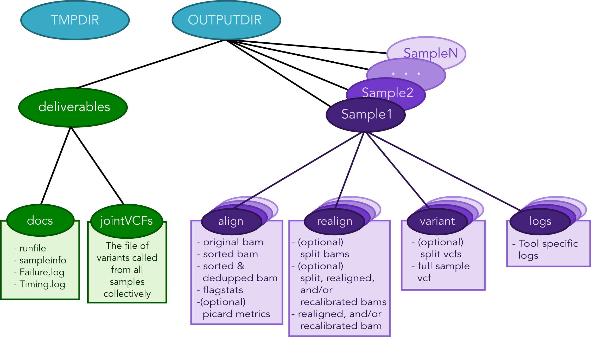

User Guide¶
For maximum flexibility, the workflow is controlled by modifying the variables contained within a runfile.
A template.runfile <https://github.com/ncsa/Swift-T-Variant-Calling/blob/master/template.runfile> is packaged within the source repo, and one can simply change the respective variables according to analysis needs. The coming sections explain the possible options in details.
Runfile Options¶
Different options are available by setting the variables below. Ordering is, of course, irrelevant in this context, but the workflow is sensitive to spelling, so variable names should be identical.
| Variable | Effect and meaning |
|---|---|
SAMPLEINFORMATION |
It is necessary that no empty line is inserted at the end of this file |
OUTPUTDIR |
The path that will serve as the root of all of the output files generated from the pipeline (See Figure 2) |
TMPDIR |
The path to where temporary files will be stored (See Figure 2) |
REALIGN |
YES if one wants to realign before recalibration, NO if not. |
SPLIT |
YES if one wants to split-by-chromosome before calling variants, NO if not. |
PROGRAMS_PER_NODE |
Sometimes it is more efficent to double (or even triple) up runs of an application on the same nodes using half of the available threads than letting one run of the application use all of them. This is because many applications only scale well up to a certain number of threads, and often this is less than the total number of cores available on a node. Under the hood, this variable simply controls how many threads each tool gets. If !!!!!!!!! IMPORTANT NOTE !!!!!!!!! It is up to the user at runtime to be sure that the right number of processes are requested per node when calling Swift-T itself (See the |
CORES_PER_NODE |
Number of cores within nodes to be used in the analysis. For multi-threaded tools: \(Number Of Threads = \frac{CoresPerNode}{ProgramsPerNode}\) |
EXIT_ON_ERROR |
If this is set to YES, the workflow will quit after a sample failsi quality control.
If set to NO, the workflow will let samples fail, and continue processing all of those that did not. The workflow will only stop if none of the samples remain after the failed ones are filtered out. This option is provided because for large sample sets one may expect a few of the input samples to fail quality control, and it may be acceptable to keep going if a few fail. However, exercise caution and monitor the Failures.log generated in the DELIVERYFOLDER/docs folder to gauge how many of the samples are failing. |
ALIGN_DEDUP_STAGE |
These variables control whether each stage is ran or skipped (only stages that were successfully run previously can be skipped, as the “skipped” option simply looks for the output files that were generated from a previous run.)
Each of these stage variables can be set to Y or N. In addition, all but the last stage can be set to End, which will stop the pipeline after that stage has been executed (think of the End setting as shorthand for “End after this stage”)
See the Pipeline Interruptions and Continuations Section for more details. |
CHR_SPLIT_STAGE |
|
VC_STAGE |
|
COMBINE_VARIANT_STAGE |
|
JOINT_GENOTYPING_STAGE |
|
PAIRED |
0 if reads are single-ended only; 1 if they are paired-end reads |
ALIGNERTOOL |
Tool for the alignment stage. either: BWAMEM or NOVOALIGN |
MARKDUPLICATESTOOL |
Tool for marking duplicates. either: SAMBLASTER, PICARD, or NOVOSORT |
BWAINDEX |
the location of the index file |
NOVOALIGNINDEX |
|
BWAMEMPARAMS; |
This string is passed directly as arguments to the tool as (an) argument(s)
Example, BWAMEMPARAMS=-k 32 -I 300,30 Note: There is no space between the ‘=’ character and your parameters
Note: Do not set the thread count or paired/single-ended flags, as they are taken care of by the workflow itself |
NOVOALIGNPARAMS |
|
CHRNAMES |
List of chromosome/contig names separated by a ‘:’
Examples: * chr1:chr2:chr3 * 1:2:3
Note: chromosome names must match those found in the files located in the directory that INDELDIR points to, as well as those in the reference fasta files |
NOVOSORT_MEMLIMIT |
Novosort is a tool that used a lot of RAM. If doubling up novosort runs on the same node, this may need to be reduced to avoid an OutOfMemory Error. Otherwise, just set it to most of the RAM on a node. You need to set this value regardless of you analysis scenario
This is set in bytes, so if you want to limit novosort to using 30 GB, one would set it to NOVOSORT_MEMLIMIT=30000000000 |
MAP_CUTOFF |
The minimum percentage of reads that were successfully mapped in a successfulalignment |
DUP_CUTOFF |
The maximum percentage of reads that are marked as duplicates in a successful sample |
REFGENOMEDIR |
Directory in which the reference genome resides |
REFGENOME |
Name of the reference genome (name only; path should be relative to the REFGENOMEDIR) |
DBSNP |
Name of the dbsnp vcf file (name only; path should be relative to the REFGENOMEDIR) |
INDELDIR |
Directory that contains the standard indel variant files used in the realignment/recalibration step
(name only; path should be relative to the REFGENOMEDIR)
Within the directory, the vcf files should be named with only the chromosome name in front and nothing else.
For example, if the chromosome is chr12 or 12, name the vcf files chr12.vcf or 12.vcf, respectively.
If not splitting by chromosome, the workflow will look for all of the vcf files in the directory. |
JAVAEXE |
Full path of the appropriate executable file |
BWAEXE |
|
SAMBLASTEREXE |
|
SAMTOOLSEXE |
|
NOVOALIGNEXE |
|
NOVOSORTEXE |
|
PICARDJAR |
Full path of the appropriate jar file |
GATKJAR |
|
JAVA_MAX_HEAP_SIZE |
Memory area to store all java objects. This should be tuned in relevance to the speed and frequency at which garbage collection should occur. With largerinput size, larger heap is needed. |
Running the Pipeline¶
Requesting Resources from the Job Scheduler¶
Swift-T works by opening up multiple “slots”, called processes, where applications can run. There are two types of processes this workflow allocates * SERVERS - Control the execution of Swift-T itself; all Swift-T applications must have at least one of these * WORKERS - Run the actual work of each application in the workflow; these will make up the vast majority of processes
Controlling various aspects of the job submission is achieved by setting
environment variables to the desired values. For example, the user can
fine control the total number of processes needed by setting
PROCS=<Number of MPI processes>, and/or the number of workers via
TURBINE_WORKERS and the number of servers via ADLB_SERVERS.
Similarly, one can specify QUEUE, WALLTIME and PROJECT
specifications. More coverage of these is provided in the Swift/T sites
guide.
Other options allow control of logging options. Especially for users
unfamiliar with Swift/T, we recommend always setting the environment
variable ADBL_DEBUG_RANKS=1 and checking the beginning of the
Swift/T log to be sure processes are being allocated as the user
expects.
Often when we use a cluster we set the ppn variable to the number of
cores on each node, but with Swift/T this usually needs to be set to the
number of processes opened on each node (unless a particular cluster
configuration allocates resources differently). =====> Jacob, this is
really to say that ppn is number of processes on each node, but it is
not neccesarily the number of cores on each node, right? Do we need
to state this, or is it sufficient to refer the user to the guide link
above, and show this in the examples/discussions of systems below?
For convenience, we recommend setting all such environment variables in a file, and then adding it to the Swift/T command. This is shown in the sections below for different schedulers (pbs, cray, slurm).
Executing the Swift-T Application¶
If using multiple nodes, one should set the SWIFT_TMP to another
location besides the default /tmp, that is shared by all of the
nodes
For example, export SWIFT_TMP=/path/to/home/directory/temp
The type of job scheduler dictates how one calls Swift-T
PBS Torque (general)¶
Usually, one can use swift-t’s built-in job launcher for PBS Torque
schedulers (calling swift-t with -m pbs)
$ cat settings.sh # For convenience, we save all environment variables in a file named settings.sh for example
export PPN=<PROGRAMS_PER_NODE>
export NODES=<#samples/PROGRAMS_PER_NODE + (1 or more)>
export PROCS=$(($PPN * $NODES))
export WALLTIME=<HH:MM::SS>
export PROJECT=<Project ID>
export QUEUE=<queue>
export SWIFT_TMP=/path/to/directory/temp
# (Optional variables to set)
export TURBINE_LOG=1
export ADBL_DEBUG_RANKS=1
export TURBINE_OUTPUT=/path/to/output_log_location
$ swift-t -m pbs -O3 -s settings.sh -o /path/to/where/compiled/should/be/saved/compiled.tic -I /path/to/Swift-T-Variant-Calling/src/ -r /path/to/Swift-T-Variant-Calling/src/bioapps /path/to/Swift-T-Variant-Calling/src/VariantCalling.swift -runfile=/path/to/your.runfile
This command will compile and run the pipeline all in one command, and the flags used in this call do the following:
-O3Conduct full optimizations of the Swift-T code during compilation (Even with full optimizations, compilation of the code takes only around 3 seconds)-m pbsThe job scheduler type, pbs torque in this case-s settings.shThe file with environment variables’ settings for the scheduler-oThe path to the compiled swift-t file (has a .tic extension); on the first run, this file will be created.-IThis includes some source files that are imported during compilation-rThis includes some tcl package files needed during compilation-nThe number of processes (ranks) Swift-T will open for this run of the workflow (this overrides the PROCS specification above, so I’m not sure we should use both – ask/advise)-runfileThe path to the runfile with all of the configuration variables for the workflow
PBS Torque (alternative)¶
If you need to import a module to use Swift/T (as is the case on iForge at UIUC), one cannot simply use the swift-t launcher as outlined above, since the module load command is not part of the qsub file that Swift-t generates and submits.
This command must be included (along with any exported environment variables and module load commands) in a job submission script and not called directly on a head/login node.
swift-t -O3 -o </path/to/compiled_output_file.tic> -I /path/to/Swift-T-Variant-Calling/src -r /path/to/Swift-T-Variant-Calling/src/bioapps -n < Node# * PROGRAMS_PER_NODE + 1 or more > /path/to/Swift-T-Variant-Calling/src/VariantCalling.swift -runfile=/path/to/example.runfile
It is important to note that (at least for PBS Torque schedulers) when
submitting a qsub script, the ppn option should be set, not to the
number of cores on each compute node, but to the number of WORKERS
Swift-T needs to open up on that node.
Example
If one is wanting to run a 4 sample job with PROGRAMS_PER_NODE set
to 2 in the runfile (meaning that two BWA runs can be executing
simultaneously on a given node, for example), one would set the PBS flag
to -l nodes=2:ppn=2 and the -n flag when calling the workflow to
5 ( nodes*ppn + 1 )
Cray System (Like Blue Waters at UIUC)¶
This call of the workflow requires many more environmental variables and no submission script: Swift-T itself will create and submit a job.
Additionally, to get the right number of processes on each node to make
the PROGRAMS_PER_NODE work correctly, one must set
PPN= PROGRAMS_PER_NODE and NODES to
#samples/PROGRAMS_PER_NODE + (1 or more), because at least one
process must be a Swift-T SERVER. If one wanted to try running 4 samples
on 2 nodes but with PPN=3 to make room for the processes that need
to be SERVER types, one of the nodes may end up with 3 of your WORKER
processes running simultaneously, which may lead to memory problems when
Novosort is called.
(The exception to this would be when using a single node. In that case,
just set PPN=#PROGRAMS_PER_NODE + 1)
So, with that understanding, call swift-t in the following way:
$ cat settings.sh
export PPN=<PROGRAMS_PER_NODE>
export NODES=<#samples/PROGRAMS_PER_NODE + (1 or more)>
export PROCS=$(($PPN * $NODES))
export WALLTIME=<HH:MM:SS>
export PROJECT=<Project ID>
export QUEUE=<Queue>
export SWIFT_TMP=/path/to/directory/temp
# CRAY specific settings:
export CRAY_PPN=true
# (Optional variables to set)
export TURBINE_LOG=1 # This produces verbose logging info; great for debugging
export ADBL_DEBUG_RANKS=1 # Displays layout of ranks and nodes
export TURBINE_OUTPUT=/path/to/log/directory # This specifies where the log info will be stored; defaults to one's home directory
$ swift-t -m cray -O3 -n $PROCS -o /path/to/where/compiled/should/be/saved/compiled.tic \
-I /path/to/Swift-T-Variant-Calling/src/ -r /path/to/Swift-T-Variant-Calling/src/bioapps \
/path/to/Swift-T-Variant-Calling/src/VariantCalling.swift -runfile=/path/to/your.runfile
Swift-T will create and run the qsub command for you.
SLURM based Systems (Like Biocluster2 at UIUC, and Stampede1/Stampede2 on XSEDE)¶
As in the case with the pbs-based clusters, it is sufficient to only
specify the scheduler using -m slurm, and then proceed as above.
Additionaly, the same settings.sh file can be used, except that the
user can also instruct the scheduler to send email notifications as
well. The example below clarifies these:
$ cat settings.sh
export PPN=<PROGRAMS_PER_NODE>
export NODES=<#samples/PROGRAMS_PER_NODE + (1 or more)>
export PROCS=$(($PPN * $NODES))
export WALLTIME=<HH:MM:SS>
export PROJECT=<Project ID>
export QUEUE=<Queue>
export SWIFT_TMP=/path/to/directory/temp
# SLURM specific settings
export MAIL_ENABLED=1
export MAIL_ADDRESS=<the desired email address for sending notifications- on job start, fail and finish >
export TURBINE_SBATCH_ARGS=<Other optional arguments passed to sbatch, like --exclusive and --constraint=.. etc>
# (Optional variables to set)
export TURBINE_LOG=1 # This produces verbose logging info; great for debugging
export ADBL_DEBUG_RANKS=1 # Displays layout of ranks and nodes
export TURBINE_OUTPUT=/path/to/log/directory # This specifies where the log info will be stored; defaults to one's home directory
$ swift-t -m slurm -O3 -n $PROCS -o /path/to/where/compiled/should/be/saved/compiled.tic \
-I /path/to/Swift-T-Variant-Calling/src/ -r /path/to/Swift-T-Variant-Calling/src/bioapps \
/path/to/Swift-T-Variant-Calling/src/VariantCalling.swift -runfile=/path/to/your.runfile
Logging Options¶
While the outputs generated by all the tools of the workflow itself will
be logged in the log folders within the OUTDIR structure, Swift-T
generates a log itself that may help debug if problems occur.
Setting the environment variable TURBINE_LOG=1 will make the log
quite verbose
Setting ADBL_DEBUG_RANKS=1 will allow one to be sure the processes
are being allocated to the nodes in the way one expects
Output Structure¶
Figure 2 below shows the Directory structure of various Output directories and files generated from a typical run of the pipeline
Data preparation¶
For this pipeline to work, a number of standard files for calling variants are needed (besides the raw reads files which can be fastq/fq/fastq.gz/fq.gz), namely these are the reference sequence and database of known variants (Please see this link).
For working with human data, one can download most of the needed files from the GATK’s resource bundle. Missing from the bundle are the index files for the aligner, which are specific to the tool that would be used for alignment (i.e., bwa or novoalign in this pipeline)
Generally, for the preparation of the reference sequence, the following link is a good start the GATK’s guidelines.
If splitting by chromosome for the
realignment/recalibration/variant-calling stages, the pipeline needs a
separate vcf file of known variants for each chromosome/contig, and each
should be named as: *${chr_name}.vcf . Further, all these files need
to be in the INDELDIR which should be within the REFGENOMEDIR
directory as per the runfile.
Resource Requirements¶
The table below describes the number of does each stage needs to achieve the maximum level of parallelism. One can request fewer resources if necessary, but at the cost of having some portions running in series.
| Analysis Stage | Resource Requirements |
|---|---|
| Alignment and Deduplication | Nodes = Samples / (PROGRAMS_PER_NOD E*) |
| Split by Chromosome/Contig | Nodes = (Samples * Chromosomes)/ PROGRAMS_PER_NODE * |
| Realignment, Recalibration, and Variant Calling (w/o splitting by chr) | Nodes = Samples / (PROGRAMS_PER_NOD E*) |
| Realignment, Recalibration, and Variant Calling (w/ splitting by chr) | Nodes = (Samples * Chromosomes)/ PROGRAMS_PER_NODE * |
| Combine Sample Variants | Nodes = Samples / (PROGRAMS_PER_NOD E*) |
| Joint Genotyping | Nodes = 1** |
* PROGRAMS_PER_NODE is a variable set in the runfile. Running 10 processes using 20 threads in series may actually be slower than running the 10 processes in pairs utilizing 10 threads each
** The call to GATK’s GenotypeGVCFs must be done on a single node. It is best to separate out this stage into its own job submission, so as to not waste unused resources.
Pipeline Interruptions and Continuations¶
Background¶
Because of the varying resource requirements at various stages of the pipeline, the workflow allows one to stop the pipeline at many stages and jump back in without having to recompute.
This feature is controlled by the STAGE variables of the runfile. At each stage, the variable can be set to “Y” if it should be computed, and “N” if that stage was completed on a previous execution of the workflow. If “N” is selected, the program will simply gather the output that should have been generated from a previous run and pass it to the next stage.
In addition, one can set each stage but the final one to “End”, which will stop the pipeline after that stage has been executed. Think of “End” as a shorthand for “End after this stage”.
Example¶
If splitting by chromosome, it may make sense to request different resources at different times.
One may want to execute only the first two stages of the workflow with # Nodes = # Samples. For this step, one would use these settings:
ALIGN_DEDUP_STAGE=Y
CHR_SPLIT_STAGE=End # This will be the last stage that is executed
VC_STAGE=N
COMBINE_VARIANT_STAGE=N
JOINT_GENOTYPING_STAGE=N
Then for the variant calling step, where the optimal resource requirements may be something like # Nodes = (# Samples * # Chromosomes), one could alter the job submission script to request more resources, then use these settings:
ALIGN_DEDUP_STAGE=N
CHR_SPLIT_STAGE=N
VC_STAGE=End # Only this stage will be executed
COMBINE_VARIANT_STAGE=N
JOINT_GENOTYPING_STAGE=N
Finally, for the last two stages, where it makes sense to set # Nodes = # Samples again, one could alter the submission script again and use these settings:
ALIGN_DEDUP_STAGE=N
CHR_SPLIT_STAGE=N
VC_STAGE=N
COMBINE_VARIANT_STAGE=Y
JOINT_GENOTYPING_STAGE=Y
This feature was designed to allow a more efficient use of computational resources.
Logging functionality¶
The provided scripts allow you to check out the trace of a successful
run of the pipeline. To invoke it, and for the time being, you need R
installed in your environment along with the shiny package.
To do so, proceed as follows:
- Go to the R-project webpage, and follow the instructions based on your system
- Once the step above is completed and R is installed, open a terminal
window, type
R, then proceed as follows:
install.packages('shiny')
runGitHub(repo = "jacobrh91/Swift-T-Variant-Calling", ref = "master",
subdir = "src/plotting_app" )
The first time you run these commands in your system it will also
install some libraries for you in case you don’t have them already,
namely: lubridate, tidyverse and forcats.
Once all is done, a webpage should open up for you to actually take a
look at your trace files. For a taste of how things look, you may take a
look at the sample Timing.log file provided in the
repo
To take a look at your own analysis trace, you need to have a copy of
this branch first, Run it on you samples, and then find your own
Timing.log file within Results_folder_path/delivery/docs. Simply
upload this file, and start using the app.
Important Notes¶
One problem spotted from using the app with 2 samples is that the
analysis is done for only one of them (the realignment/recalibration
stages are problemetic, where sampleNames get swapped haphazardly, and
only one sample gets fully analyzed, which is what the supplied example
Timing.log file shows - this needs a closer look)
It should also be noted that running this pipeline in its current form
is expected to be more expensive than normal, due to the manual logging
involved. The alternative is to use the native MPE library (or
equivalent), which requires re-compiling the Swift/T source. This
approach is currently limited at the moment, but some discussions
with the Swift/T team on this is found on their
repo